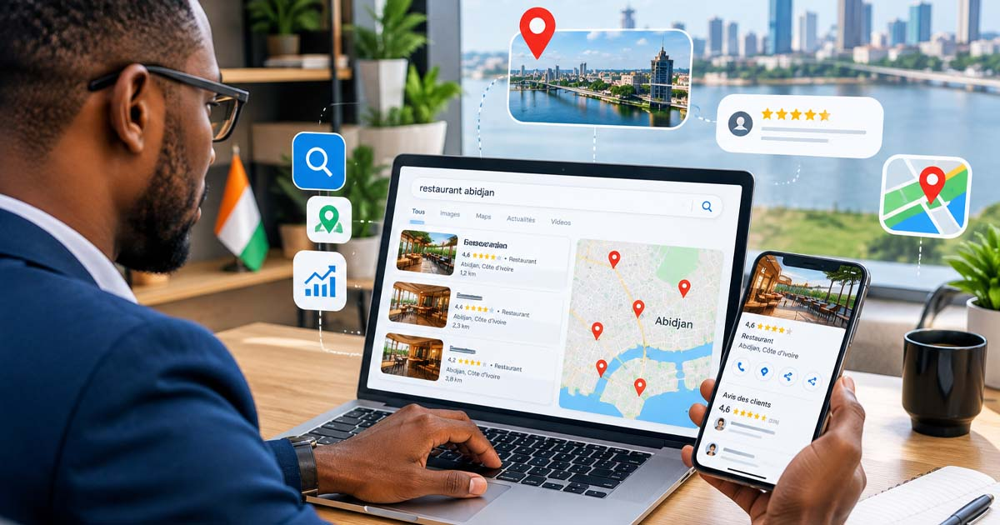
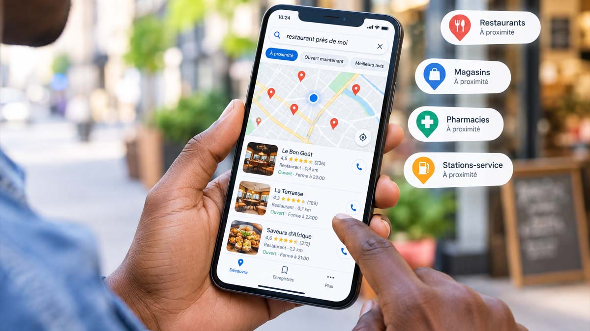

Quand un client potentiel cherche « agence web Abidjan », « restaurant Cocody » ou « plombier Marcory » sur Google, c'est souvent le résultat d'une recherche locale. Ces recherches représentent une opportunité énorme pour les entreprises ivoiriennes : l'utilisateur a un besoin précis et une intention d'achat immédiate. Le piège ? Si votre entreprise n'apparaît pas dans les résultats, c'est un concurrent qui la remplace — parfois sans même avoir une meilleure offre.
1. Créer une fiche Google Business complète
La fiche Google Business Profile est le pilier du référencement local. C'est elle qui permet à votre entreprise d'apparaître dans le fameux « pack local » (les 3 résultats en haut de la page avec carte) et sur Google Maps.
- Nom cohérent : utilisez exactement le nom commercial de votre entreprise, sans mots-clés artificiels.
- Catégorie précise : choisissez la catégorie principale qui correspond à votre activité réelle.
- Adresse et zones desservies : soyez précis (quartier, commune, ville) et indiquez honnêtement vos zones d'intervention.
- Horaires, téléphone, site web : chaque information manquante est une chance de moins d'être retenu, et un doute pour le client.
- Photos : ajoutez régulièrement des photos réelles de votre activité, de vos produits et de votre équipe.
Une fiche complète est une fiche « active » : Google considère que l'entreprise répond mieux au besoin de l'utilisateur et la classe plus haut.
2. Collecter et gérer les avis clients
Les avis sont le second facteur décisif du classement local. Un client qui hésite entre deux restaurants ou deux artisans à Abidjan regardera d'abord les notes et les commentaires.
- Demandez un avis à un client satisfait au moment du service rendu, pas un mois plus tard.
- Répondez à chaque avis, positif comme négatif : cela montre votre sérieux et améliore votre signal local.
- N'achetez jamais d'avis et ne sollicitez pas d'avis fictifs — Google le détecte et peut vous pénaliser.

3. Créer des pages dédiées à vos zones d'intervention
Si vous intervenez dans plusieurs communes (Plateau, Cocody, Marcory, Treichville, Yopougon…), créez une page ou une section d'article pour chacune. Une page « Exterieur peinture à Cocody » ou « Agence web à Abidjan » optimisée localement est une porte d'entrée supplémentaire sur Google.
Important : ces pages doivent être utiles et uniques, pas du texte rempli de mots-clés. Décrivez ce que vous faites réellement dans cette zone, les références locales, les spécificités du quartier. On le répète rarement assez : Google récompense la qualité du contenu, pas la densité de mots-clés.
4. Optimiser votre site pour le SEO local
Votre site web doit confirmer à Google que vous êtes une entreprise locale sérieuse :
- Nom, adresse, téléphone (NAP) : le même nom, la même adresse et le même numéro sur tout le site, partout et sans variation.
- Balises title et meta description : intégrez la ville et la zone d'intervention dans les balises de vos pages clés.
- Données structurées LocalBusiness : elles aident Google à comprendre votre activité, vos horaires et votre zone de service.
- Contenu régulier : un blog ou des actualités locales montrent que votre entreprise est vivante et ancrée dans son environnement.
5. Mesurer et ajuster en continu
Le référencement local n'est pas une action ponctuelle. Observez chaque mois la visibilité de votre fiche Google (consultations, appels, clics), suivez votre position sur les recherches locales de votre secteur, et ajustez : nouvelles pages, nouveaux contenus, nouveaux avis.
En Côte d'Ivoire, le référencement local est encore largement sous-exploité. Les entreprises qui s'y mettent dès maintenant construisent un avantage difficile à rattraper par la concurrence, car la confiance et les avis se gagnent sur la durée.
Vous voulez être trouvé sur Google à Abidjan ? BRAIN audite gratuitement votre visibilité locale et vous propose un plan d'action concret, de la fiche Google au contenu optimisé. Demandez votre audit SEO.